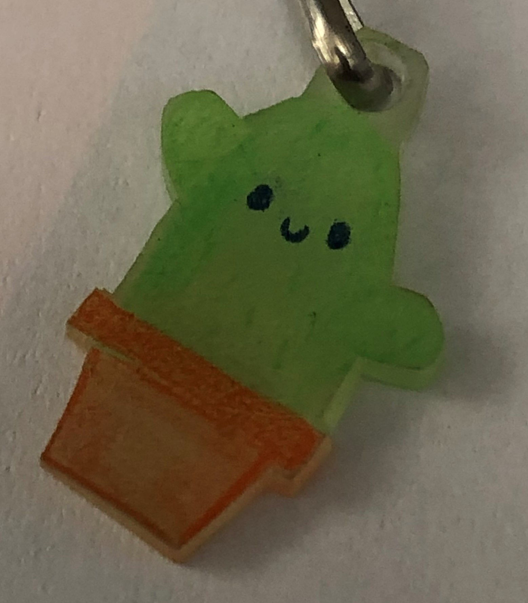

Welcome to my website!
Here is a link to my current university website. Penn State Erie, The Behrend College.
And here is a link to my resume! resume link.
And here is a link to my DIGIT 100 assigments page! Assignments
I am currently a student at Penn State University, The Behrend College with a major in Digital Media, Arts, and Technology. I have three dogs, each roughly the size of a shoebox, and multiple plants. I love to read, draw, play tennis, play video games, and spend time with my family and friends.